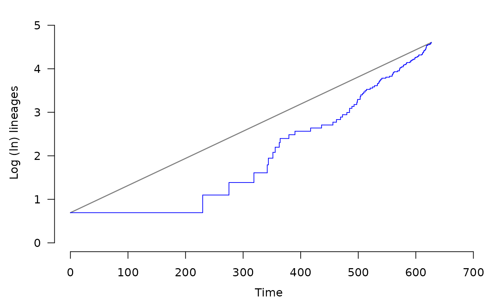
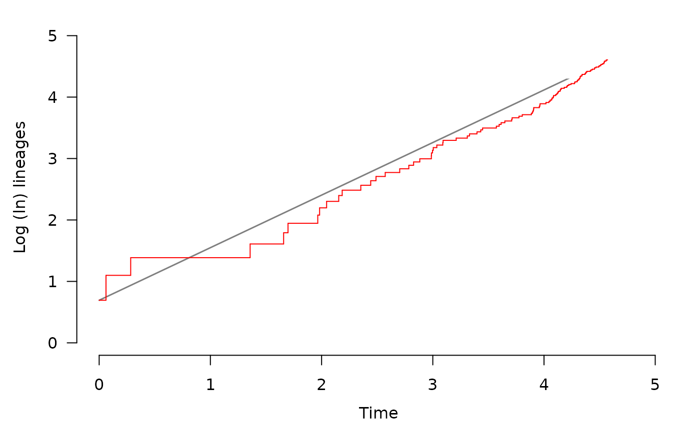
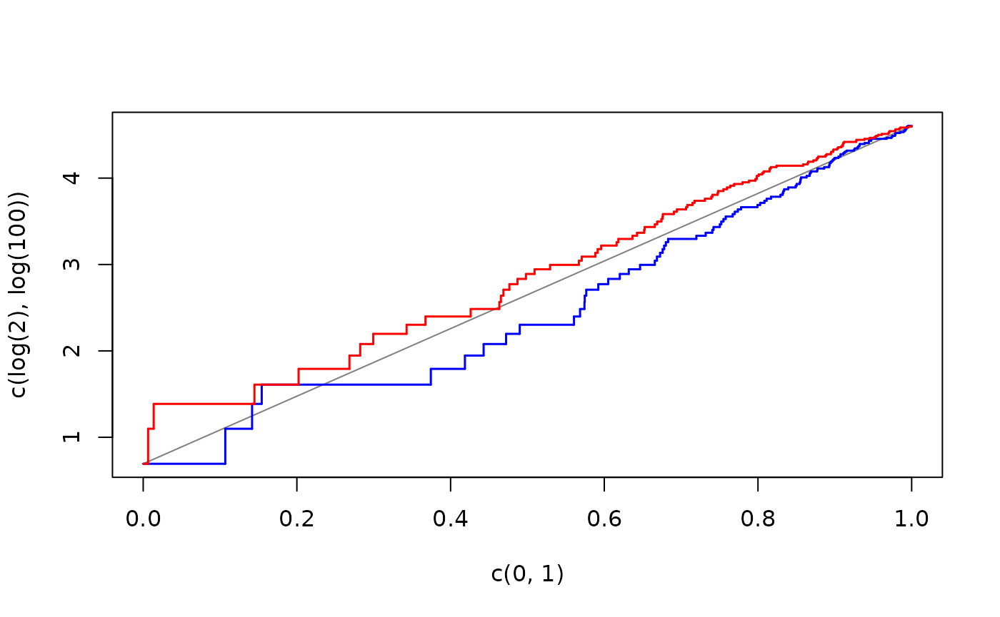
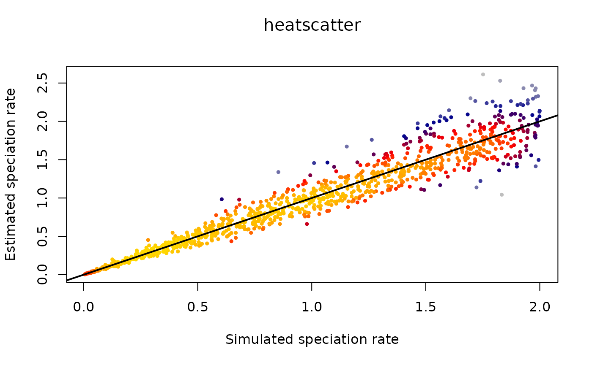
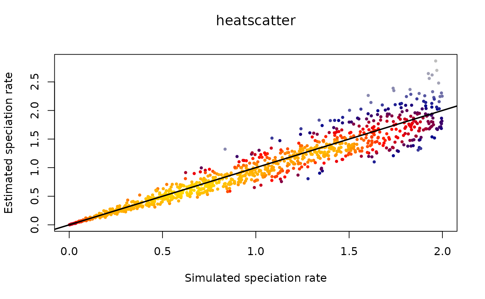
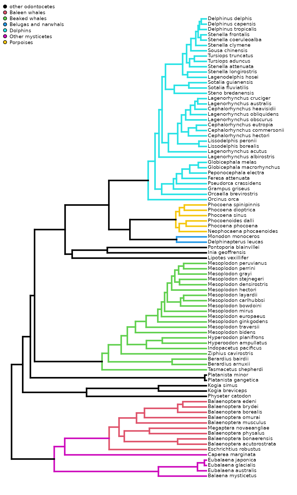
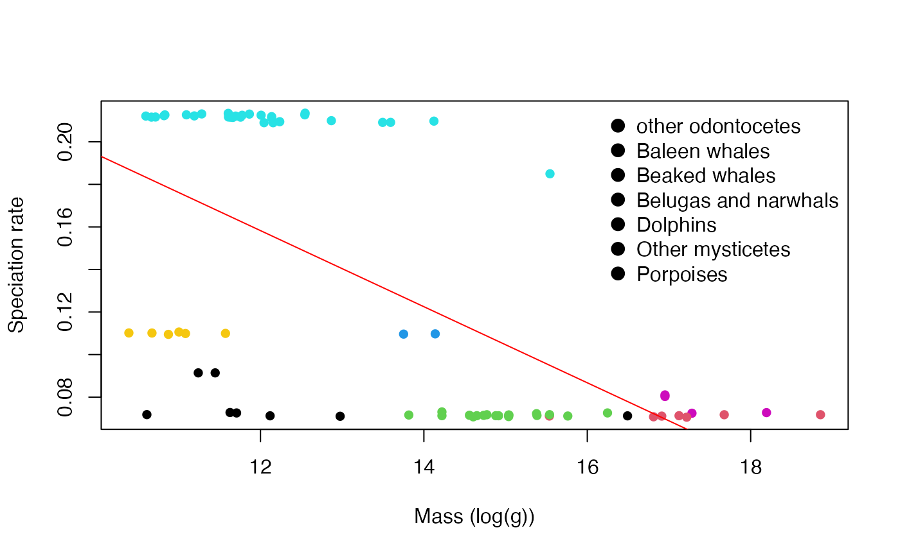
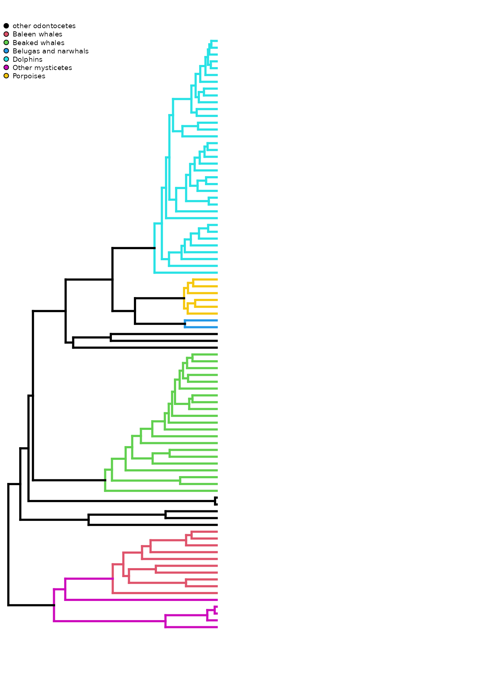
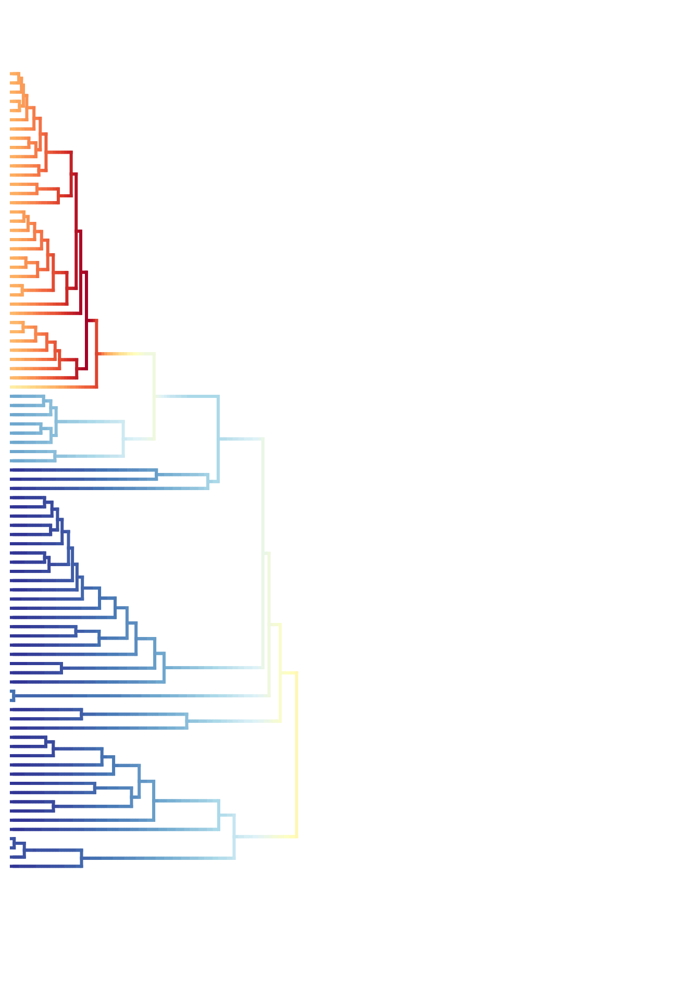

Birth-death models and molecular phylogenies
Matheus Januario, Andressa Viol, and Daniel Rabosky
Jan 2024
Source:vignettes/birthdeath_phylogenies.Rmd
birthdeath_phylogenies.RmdLearning objectives
- Estimating diversification rates under pure birth
- Estimating diversification rates under birth-death
- What affects speciation and extinction?
Simulating phylogenetic trees
Molecular phylogenies are built from DNA sequences and therefore only include extant species. In this vignette, we will simulate and analyze “ideal” versions of these molecular phylogenies. We know from previous vignettes that using molecular phylogenies directly (“naively”) can lead to spurious conclusions, as these phylogenies are missing a lot of information. Despite this limitation, there is still a lot we can learn about speciation and extinction from molecular phylogenies. This is what we will do today.
As we dive into the realm of molecular phylogenies, keep in mind that most groups of organisms do not have good fossil records. In such cases, phylogenetic trees of extant species are often the only information we will ever have about rates of speciation and/or extinction in these groups.
We will be simulating molecular phylogenies with a function from our
package evolved, so let’s first check the arguments of
simulateTree().
args(simulateTree)## function (pars, max.taxa = Inf, max.t, min.taxa = 2, include.extinct = FALSE)
## NULLpars = A vector containing the speciation and extinction
rates, written as c(S, E).
max.taxa = Maximum number of taxa to include in the
tree.
min.taxa = Minimum number of taxa to include in the
tree.
max.t = Maximum time of simulation.
include.extinct = A logical (TRUE or FALSE) describing
if the phylogeny should include lineages that went extinct before the
simulation ended.
This function carries out a simulation of diversification, resulting in a phylogenetic tree that traces the relationships between the taxa that speciated and went extinct during the simulation. Speciation is simulated as one lineage “giving birth” to another, bifurcating into two new species. Extinction is of course the complete disappearance or “death” of a lineage. Whether these events occur or do not occur is dependent on a random number draw. Also, the simulation keeps track of how many time steps have passed since its initiation.
The simulation ends when either (a) the amount of elapsed time
surpasses the maximum time for the simulation, given in the parameter
max.t, or (b) the number of lineages existing (“alive”) at
the current time step surpasses the maximum number of taxa, given in the
parameter max.taxa. These two cases are the “stopping
criteria” for the simulation, and when either occurs, the simulation
terminates and outputs a phylogenetic tree.
Now that you understand what is going on “under the hood” in this simulation, let’s try to run one. Initiate a simulation as follows:
# Set parameters for simulation
S <- 1
E <- 0
# Set seed so we all get same results
set.seed(1)
# First, generate tree with no extinction and 6 tips
tree_pb <- simulateTree(pars = c(S, E), max.taxa = 6, max.t = 10)
# Then we reset the seed. From now on, you will
# have different results each time you run a phylogeny:
set.seed(NULL)The ape package in R provides nice functions for
visualizing and manipulating phylogenetic trees. Here, we will use a
function from this package to plot the phylogenetic tree we just
simulated:
plot.phylo(tree_pb, show.tip.label=F)
# Add a timescale (in Mya, and zero is the time the simulation stopped):
axisPhylo()Run another simulation and plot it again. Then plot some others. Each
time you do this, vary the values you insert for speciation and
extinction rates (the vector you pass into the pars
argument), particularly focus on increasing or decreasing the difference
between these values. Take note of how the trees vary.
As you do this, you may find that the absolute magnitude of branch lengths (the total number of lines) depends on the diversification rate (), though tree shape (general structure, or topology) does not. Tree shape is, however, highly sensitive to the relative extinction rate, or .
To get a sense for this, we will simulate a phylogeny with very small relative extinction (), and a pure-birth tree () for comparison.
Note: it doesn’t make much sense to specify because this evolutionary process will almost always go extinct before speciating, thus leaving no tree – so we will omit this case.
To make for easier visualization, we will increase our maximum taxa parameter from 6 to 100 tips.
# Generating tree with high relative extinction and 100 tips
tree_lowE <- simulateTree(pars=c(1, 0.05), max.taxa=100, max.t = Inf)
# And a pure birth tree, holding all arguments the same except with no extinction:
tree_pb <- simulateTree(pars=c(0.01, 0), max.taxa=100, max.t = Inf)Let’s plot both trees side by side.
plot.new()
par(mfrow=c(1,2), mar=c(0,0,0,0))
plot.phylo(tree_pb, show.tip.label=F)
plot.phylo(tree_lowE, show.tip.label=F)
# Restoring old par() configs:
par(oldpar)Now we will visualize lineage-through-time (LTT) plots for these trees, just like we did a few weeks ago. The LTT plots contain a lot of information about phylogenetic tree structure. Let’s see what this can tell us about the shape of trees produced by different speciation and extinction rates.
# plot lineage through time plots:
lttPlot(tree_pb, col = "blue", knitr = T)
lttPlot(tree_lowE, col = "red", knitr = T)
# or, in a single plot:
plot(x=c(0,1), y = c(log(2), log(100)), lwd=1, col="gray50", type = "l")
lttPlot(tree_pb, rel.time=T, add=T, col="blue", lwd=1.5, knitr = T)
lttPlot(tree_lowE, rel.time=T, add=T, col="red", lwd=1.5, knitr = T)
In the plot above, the grey line represents the expected mean of lineages through time in a pure-birth process. As you already know, the birth-death process is a stochastic model, so even though the average number of species tends to follow this line, usually the actual number of species (i.e., the blue line) will vary.
Are you surprised? Think about what you’ve just seen: you compared two (or three) phylogenies, all of which have zero extinct species shown… and yet, it appears that something seems different about the trees! Is this what you would have expected? The fact that trees of only extant species might have information about extinction, even though there is no observed extinction in the tree, is potentially very useful!
As an extra exercise for you to build intuition, check LTT plots with
S = 0.001, 0.01, 0.1, and
1.0.
Now, we are going to apply the simplest possible estimator of
speciation rate to our simulated phylogenetic trees to test how much
information they contain about the true rates of speciation and
extinction. We have included a simple function,
estimateSpeciation(), that will compute the “best” estimate
of speciation for a given tree, assuming that there is no
extinction.
If you are wondering, it is indeed possible to do this while allowing extinction to be nonzero and we will do so later in lab, but the mathematics are more complicated. So we’ll start with the simpler model.
First, let’s generate a couple of phylogenies and then estimate to see how well they correspond.
tree1 <- simulateTree(c(0.5, 0), max.taxa = 40, max.t = Inf)
tree2 <- simulateTree(c(1, 0), max.taxa = 40, max.t = Inf)
tree3 <- simulateTree(c(5, 0), max.taxa = 40, max.t = Inf)
matrix(c(estimateSpeciation(tree1), estimateSpeciation(tree2), estimateSpeciation(tree3),
0.5, 1, 5), ncol = 2, dimnames = list(NULL, c("Estimated", "True")))## Estimated True
## [1,] 0.4741897 0.5
## [2,] 1.1573038 1.0
## [3,] 4.4019975 5.0Now that you have a sense for the accuracy of our estimator, let’s simulate 100 phylogenetic trees with variable speciation rates and apply this simple estimator. We can then ask how correlated those estimates are with the true rates. In other words, how well can we recover the true rates using the simple estimator?
REPS <- 1000
x <- numeric(REPS)
res <- data.frame(true_S=x, true_E=x, est_S=x)
for(i in 1:REPS){
# pick a speciation rate with any value between 0 and 2:
sim_S <- runif(1, min = 0, max = 2)
# in the pure birth, extinction rate is always zero
sim_E <- 0
# simulate tree:
tree_sim <- simulateTree(pars=c(sim_S, sim_E),
max.taxa=50, max.t = Inf)
#fitting the model:
fit <- estimateSpeciation(tree_sim)
res$true_S[i] <- sim_S
res$true_E[i] <- sim_E
res$est_S[i] <- fit
}Let’s check our estimates (notice that warm colors mean more points aggregated):
For speciation rates:
heatscatter(res$true_S, res$est_S,
xlab = "Simulated speciation rate",
ylab="Estimated speciation rate")
# Then,we add the 1:1 line (i.e. a perfect estimation)
abline(a = 0, b = 1, lwd=2)
Remember these phylogenies were created through a pure-birth process, thus we do not need to estimate extinction rates.
Now you might ask: what if extinction really is not zero? How bad would our speciation estimates be?
To explore this, let’s simulate a set of phylogenies under low and high relative extinction (E / S = 0.05 and E / S = 0.95) and do the same thing we did previously, again estimating speciation under the simple (pure birth) estimator.
While you wait for the next chunk of code to run, answer the question just after it:
REPS <- 1000
x <- numeric(REPS)
res <- data.frame(true_S=x, true_E=x, est_S=x)
for(i in 1:REPS){
# Pick a speciation rate with any value between 0 and 2:
sim_S <- runif(1, min = 0, max = 2)
# Now we will change the extinction fraction to always equal 0.05
sim_E <- sim_S * 0.05
# simulate tree:
tree_sim <- simulateTree(pars=c(sim_S, sim_E),
max.taxa=50, max.t = Inf)
#fitting the model:
fit <- estimateSpeciation(tree_sim)
res$true_S[i] <- sim_S
res$true_E[i] <- sim_E
res$est_S[i] <- fit
}Let’s check our estimates for the case.
For speciation rates:
heatscatter(res$true_S, res$est_S,
xlab = "Simulated speciation rate",
ylab="Estimated speciation rate")
#Then,we add the 1:1 line (i.e. a perfect estimation)
abline(a = 0, b = 1, lwd=2)
Now, we will use a more complex estimation procedure. We will
estimate parameters by using a more sophisticated estimator that allows
extinction and speciation rates to be nonzero. The mathematics of this
are beyond the scope of this vignette, but we have provided a handy
function that does the model-fitting for you, assuming rates are
constant (through time and species): fitCRBD(). For
example:
tree <- simulateTree(c(1, 0.95), max.taxa = 50, max.t = Inf)
# estimating:
fitCRBD(tree)## S E
## 1.440485 1.497985Let’s repeat our simulation procedure, but this time we will fit a model where extinction can be nonzero. We won’t display the plots here, but feel free to copy and paste the code into your R console to see the results yourself!
NOTE: if you see the message
Error in simulateTree(pars = c(sim_S, sim_E), max.taxa = 50) : Too many trees going extinct
just run the chunk code again.
REPS <- 1000
x <- numeric(REPS)
res <- data.frame(true_S=x, true_E=x, est_S=x, est_E=x)
for(i in 1:REPS){
# pick a speciation rate with any value between 0 and 2:
sim_S <- runif(1, min = 0, max = 2)
# pick a relative extinction rate:
rel_ex <- runif(1 , 0, 0.95)
# calculate E from that extinction fraction
sim_E <- sim_S * rel_ex
# simulate tree:
tree_sim <- simulateTree(pars=c(sim_S, sim_E),
max.taxa=50, max.t = 1000)
# fitting the model:
fit <- fitCRBD(tree_sim)
res$true_S[i] <- sim_S
res$true_E[i] <- sim_E
res$est_S[i] <- fit["S"]
res$est_E[i] <- fit["E"]
}Don’t forget to check our estimates for the speciation rate:
heatscatter(res$true_S, res$est_S,
xlab = "Simulated speciation rate",
ylab="Estimated speciation rate")
# Then,we add the 1:1 line (i.e. a perfect estimation)
abline(a = 0, b = 1, lwd=2)
# Making a simple linear model:
S_lm <- lm(res$est_S~res$true_S)
# And checking how much variation is explained
summary(S_lm)$r.squaredAnd for the extinction-speciation ratio:
Note: It is not adequate to directly correlate simulated and estimated extinction rates. This happens because we can only generate phylogenies when , and thus we do not allow extinction to vary in a way that is completely independent from speciation. However, when we correlate simulated and estimate , we ameliorate this particular issue enough (for this vignette).
sim_K = res$true_E/res$true_S
est_K = res$est_E/res$est_S
LSD::heatscatter(sim_K, est_K,
xlab = "Simulated E/S",
ylab="Estimated E/S")
#making a simple linear model:
K_lm <- lm(est_K~sim_K)
summary(K_lm)$r.squared
#Then,we add the 1:1 line (i.e. a perfect estimation)
abline(a = 0, b = 1, lwd=2)Think for a moment on the result of this simulation. We actually fit a constant-rate birth-death model to a constant-rate simulated phylogeny. We have very few reasons to expect that real phylogenies will be as constant as this – this is especially true for clades that are older or that have colonized many different environments. The scatterplot you just saw is the ceiling of how well extinction rates can possibly be estimated.
In the empirical example in the next section we will focus our attention on speciation rates because they can be estimated with higher precision from molecular phylogenies. Remember, though, that extinction is potentially as important as speciation in terms of what factors shape temporal diversity dynamics.
What affects speciation and extinction?
Another layer of complexity that real phylogenies might have is the possibility that diversification rates can vary among lineages. This may happen if traits that differ between lineages affect speciation or extinction rates.
To test this, we will use the molecular, time-calibrated phylogeny of
whales, already included as a dataset in the package
BAMMtools. We can access it by typing:
data("whale_phylo")Note that many different types of whales are included here:
par(cex=0.6)
plotPaintedWhales(knitr = T)## no colors provided. using the following legend:
## 1 Baleen whales Beaked whales
## "black" "#DF536B" "#61D04F"
## Belugas and narwhals Dolphins Other mysticetes
## "#2297E6" "#28E2E5" "#CD0BBC"
## Porpoises
## "#F5C710"
# Restoring old par() configs:
par(oldpar)One might argue that species with high dispersal capacity will be less likely to speciate, because they can maintain population connectivity (i.e., high gene flow) over larger geographic areas (similarly to what is disucssed in Kisel and Barraclough 2010). In general, body size correlates with dispersal distance across vertebrates, so we might expect large-bodied whales to have higher dispersal capacity than small-bodied whales. Thus, we might predict an association between body size and speciation rate across whales, given significant variation in whale body size.
Now, let’s test this correlation. To do this, we will first load data on whale mass (originally downloaded from PanTheria; Jones et al, 2009) and species-specific speciation rates (originally downloaded from Rabosky, 2014)). Species-specific speciation rates were estimated by fitting birth-death models to molecular phylogenies and allowing diversification rates to vary both through time and among clades. We provide Rabosky’s (2014) results here as a quick exploration of how an analysis using such a model might be conducted.
## species log_mass S color
## 1 Balaena_mysticetus 18.19367 0.07272368 #CD0BBC
## 2 Balaenoptera_acutorostrata 15.53597 0.07111798 #DF536B
## 3 Balaenoptera_borealis 16.91137 0.07108088 #DF536B
## 4 Balaenoptera_edeni 16.81124 0.07075967 #DF536B
## 5 Balaenoptera_musculus 18.85455 0.07173890 #DF536B
## 6 Balaenoptera_physalus 17.67637 0.07172809 #DF536BLet’s make a simple scatterplot, coloring points by clade. After that, we will add a simple linear model of body mass on speciation rate.
plot(x=data_whales$log_mass, data_whales$S, pch = 16,
xlab="Mass (log(g))", ylab="Speciation rate", col=data_whales$color)
legend(x="topright",legend=c("other odontocetes","Baleen whales",
"Beaked whales","Belugas and narwhals",
"Dolphins","Other mysticetes","Porpoises"),
pch=16,pt.cex=1.5,pt.bg=c("black",
"#DF536B","#61D04F","#2297E6","#28E2E5",
"#CD0BBC","#F5C710"),bty="n")
# Then we construct a linear model:
whales_lm <- lm(data_whales$S~data_whales$log_mass)
summary(whales_lm)##
## Call:
## lm(formula = data_whales$S ~ data_whales$log_mass)
##
## Residuals:
## Min 1Q Median 3Q Max
## -0.111355 -0.038805 0.004617 0.047447 0.090063
##
## Coefficients:
## Estimate Std. Error t value Pr(>|t|)
## (Intercept) 0.372832 0.036345 10.258 8.51e-16 ***
## data_whales$log_mass -0.017881 0.002662 -6.716 3.48e-09 ***
## ---
## Signif. codes: 0 '***' 0.001 '**' 0.01 '*' 0.05 '.' 0.1 ' ' 1
##
## Residual standard error: 0.052 on 73 degrees of freedom
## Multiple R-squared: 0.3819, Adjusted R-squared: 0.3735
## F-statistic: 45.11 on 1 and 73 DF, p-value: 3.483e-09
abline(whales_lm, col="red")
What do you think? Does this relationship support our hypothesis that size influences speciation rate?
Before you answer, let’s plot the data with the phylogeny.
Shifts in diversification rates
Recall that in real phylogenies, diversification rates can vary among clades and through time, so one possible question is: where and when are these shifts on the phylogeny?
We can use the datasets on whales in the package
BAMMtools to explore this possibility.
Let’s read in these files and draw a color-coded phylogeny where warmer colors indicate higher speciation rates. Below, the phylogeny on the right contains information on speciation rate, the one on the right is merely color-coded by clade.
x <- getEventData(whales, events.whales, burnin = 0.1)## Processing event data from data.frame
##
## Discarded as burnin: GENERATIONS < 995000
## Analyzing 1801 samples from posterior
##
## Setting recursive sequence on tree...
##
## Done with recursive sequence
par(mfrow=c(1,2)) #making a panel
plotPaintedWhales(ftype="off", direction="rightwards", mar=c(5.1,0,2.1,2.1), show.legend = TRUE, knitr = T)## no colors provided. using the following legend:
## 1 Baleen whales Beaked whales
## "black" "#DF536B" "#61D04F"
## Belugas and narwhals Dolphins Other mysticetes
## "#2297E6" "#28E2E5" "#CD0BBC"
## Porpoises
## "#F5C710"
plot.bammdata(x, lwd = 3, mar=c(5.1,0,2.1,2.1), direction = "leftwards")
# Restoring old par() configs:
par(oldpar)
References:
Jones, K. E., Bielby, J., Cardillo, M., Fritz, S. A., O’Dell, J., Orme, C. D. L., … & Purvis, A. (2009). PanTHERIA: a species‐level database of life history, ecology, and geography of extant and recently extinct mammals: Ecological Archives E090‐184. Ecology, 90(9), 2648-2648.
Kisel, Y., & Barraclough, T. G. (2010). Speciation has a spatial scale that depends on levels of gene flow. The American Naturalist, 175(3), 316-334.
Rabosky, D. L. (2014). Automatic detection of key innovations, rate shifts, and diversity-dependence on phylogenetic trees. PloS one, 9(2), e89543.